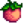
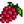
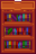

Traveling Cart
This page or section contains unmarked spoilers from update 1.6 of Stardew Valley. Players may want to avoid or be cautious toward reading this article/section. |
| Article Stub
This article is marked as a stub for the following reason:
|
| Traveling Cart | |
 | |
 | |
| Open Hours: | 6:00am to 8:00pm Friday and Sunday 5:00pm to 2:00am during Night Market 12:00pm to 2:00am during Desert Festival |
| Closed: | Monday - Thursday, Saturday |
| Address: | Cindersap Forest |
| Occupants: | Traveling Merchant |
The Traveling Cart is a shop that appears south of The Farm in Cindersap Forest on Fridays and Sundays, closing at 8pm. It also appears each day of the Night Market (Winter 15-17) and each day of the Desert Festival (Spring 15-17). Stock changes each day the Traveling Merchant appears. The merchant will sell a selection of ten random items in limited quantities (1 or 5 of each) as "standard stock", plus one piece of furniture at any one time. There may be an additional "special stock" item for sale as well.
Traveling Cart prices may vary from visit to visit. Prices are usually quite inflated, but every once in a while an item can be sold for less than its normal price. Do note that items are sometimes found for sale outside their normal seasons, which can be helpful for completing bundles.
The cart is pulled by a pig wearing a fez and spectacles. Interacting with the pig will result in it oinking at the character. Holding down the right mouse button will cause the pig to repeatedly oink, resembling a song. During the Night Market, the pig floats behind the cart in an inner tube.
Special Stock
Note that the Coffee Bean and Rare Seed may also be sold during any season as Standard Stock.
| Item | Unit Price | Season | Notes | |
|---|---|---|---|---|
| Rare Seed | 100% chance to appear. 10% chance for 5 stacks; 90% chance for 1 stack. | |||
| Rarecrow #4 | 40% chance to appear. | |||
| Coffee Bean | 25% chance to appear. | |||
| Red Fez | 10% chance to appear. | |||
| Joja Furniture Catalogue | 10% chance to appear if the Community Center Bundles have been completed. | |||
| Junimo Catalogue | 10% chance to appear if either the Community Center Bundles or the Joja Community Development Form has been completed. | |||
| Retro Catalogue | 10% chance to appear. | |||
| Tea Set | 5% chance to appear from Year 25 onwards.[1] | |||
| Stardew Valley Almanac | 5% chance for one of the five skill books to appear. | |||
| Bait And Bobber | ||||
| Woodcutter's Weekly | ||||
| Mining Monthly | ||||
| Combat Quarterly | ||||
| Wedding Ring Recipe | Multiplayer only: 100% chance to appear until purchased. Singleplayer: Does not appear. | |||
Spouse Portraits
Once a villager becomes your spouse, or Krobus becomes your roommate, their portrait becomes available to buy. It will show up every time the Traveling Cart visits as long as you have 14 hearts with your spouse/roommate at the time. These portraits have a fixed  30,000g price.
30,000g price.
Standard Stock
Items not shown are not sold at the Traveling Cart. Items sold at the Traveling Cart are always of normal quality, never silver, gold, or iridium quality.
Cooked Dishes
| Item | Price |
|---|---|
Crops & Foraging
| Item | Price |
|---|---|
|  Melon | |
|  Salmonberry | |
Seeds & Fertilizer
Fish & Beach Forage
| Item | Price |
|---|---|
Artisan Goods
| Item | Price |
|---|---|
Animal Products
| Item | Price |
|---|---|
Crafting
| Item | Price |
|---|---|
Resources
| Item | Price |
|---|---|
Tapper Products
| Item | Price |
|---|---|
Bait & Tackle
| Item | Price |
|---|---|
Monster Loot
| Item | Price |
|---|---|
Furniture
Each piece of Furniture shown below has an equal chance of appearing in the Traveling Cart's stock (1/146 or 0.68%). The price for each will be between  250–2,500g.
250–2,500g.
Furniture not shown is not sold at the Traveling Cart.
Chairs, Benches, & Couches
Tables
Decorative Plants
|
|
|
Paintings & Wall Hangings
Other Furniture
|
 Luxury Bookcase |
|
Guaranteed Red Cabbage
If the Guarantee Year 1 Completable advanced option was enabled when creating the save, the traveling cart is guaranteed to sell Red Cabbage Seeds at least once in the first year, between spring 7 in the Forest (the cart's second visit) and winter 16 at the Night Market (the cart's 30th visit). The day is selected at random when the save is created. The guarantee only applies on that single day, even if the player doesn't check the cart or buy the seeds on that day.[2]
External Links
Players with access to their saved game files may find the "Stardew Predictor" utility helpful for predicting which items the Traveling Cart will offer each week, and during the Night Market. The utility is located at https://mouseypounds.github.io/stardew-predictor/.
Bugs
- For the Android and iOS version of the game, after buying something from the cart and closing and reopening the shop menu, the item can be purchased again. This can be repeated indefinitely.
References
- ↑ See Content\Data\Shops.xnb. In the Trader's section, the Condition for the Tea Set to appear is "YEAR 25, SYNCED_RANDOM day teaset .05".
- ↑ The game code initializes Game1.netWorldState.Value.VisitsUntilY1Guarantee in Game1::loadForNewDay, then decrements it for each traveling cart visit. Red Cabbage Seeds are guaranteed when the value reaches zero, after which it's decremented to -1 and no longer applies.
History
- 1.0: Introduced.
- 1.1: Added Coffee Bean for purchase.
- 1.3.27: Added appearance at Night Market.
- 1.4: Removed duplicate entries from Standard Stock. Removed Sweet Gem Berry, Void Egg, and Void Mayonnaise from potential standard stock. Added new items to standard stock: Brick Floor, Caviar, Flounder, Green Tea, Midnight Carp, Rice Shoot, Seafoam Pudding, Shrimp Cocktail, Tea Sapling, Triple Shot Espresso, Unmilled Rice.
- 1.5: Added Oceanic Rug to possible furniture stock.
- 1.6: Added appearance at Desert Festival. Spouse portraits, Joja Furniture Catalogue, Junimo Catalogue, Retro Catalogue, Tea Set, and skill books added to special stock.
- 1.6.3: Ancient Seeds are no longer sold. Added Krobus Portrait.
| Buildings | ||
|---|---|---|
| Merchants | Abandoned House • Adventurer's Guild • Blacksmith • Bookseller • Carpenter's Shop • Casino • Desert Trader • Fish Shop • Giant Stump • Harvey's Clinic • Ice Cream Stand • Island Trader • JojaMart • Marnie's Ranch • Oasis • Pierre's General Store • Qi's Walnut Room • The Stardrop Saloon • Traveling Cart • Volcano Dwarf • Wizard's Tower | |
| Houses | 1 River Road • 2 River Road • 1 Willow Lane • 2 Willow Lane • 24 Mountain Road • Elliott's Cabin • Farmhouse • Island Farmhouse • Leah's Cottage • Mayor's Manor • Tent • Trailer • Treehouse | |
| Farm Buildings | Farming | Barn • Cabin • Coop • Fish Pond • Greenhouse • Mill • Pet Bowl • Shed • Silo • Slime Hutch • Stable • Well |
| Special | Desert Obelisk • Earth Obelisk • Farm Obelisk • Gold Clock • Island Obelisk • Junimo Hut • Water Obelisk | |
| Other Buildings | Community Center • Dog Pen • Island Field Office • Joja Warehouse • Movie Theater • Museum • Spa • Witch's Hut | |